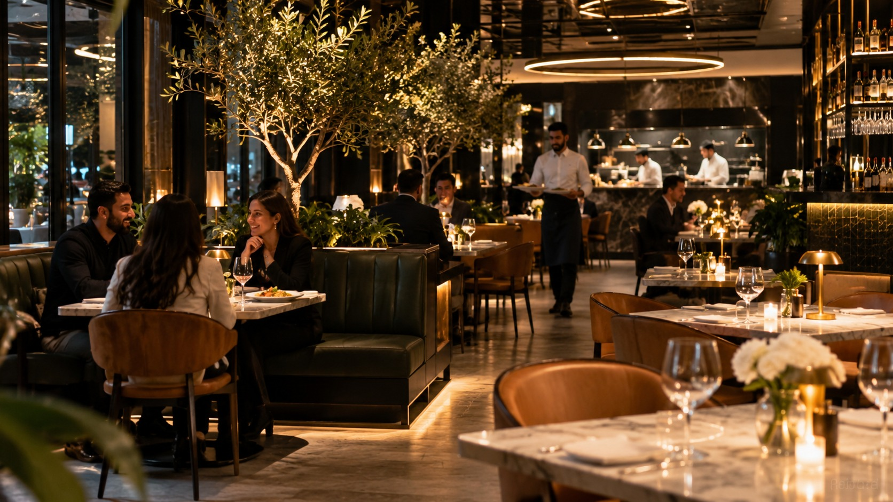

How Digital Customer Touchpoints Are Changing the Hospitality Experience
Exploring how discreet, well-positioned digital touchpoints are transforming guest interactions from arrival to bill payment across UK pubs and restaurants.
Practical perspectives on venue technology, operational realities, and guest experience design from UK hospitality specialists.
Exploring how discreet, well-positioned digital touchpoints are transforming guest interactions from arrival to bill payment across UK pubs and restaurants.

Exploring how discreet, well-positioned digital touchpoints are transforming guest interactions from arrival to bill payment across UK pubs and restaurants.

Why removing barriers to menu access increases average order value, reduces server friction, and dramatically improves diner satisfaction.
Practical methods for capturing positive guest feedback at the moment of peak satisfaction without awkward staff prompts or policy violations.
A balanced operational comparison analyzing print costs, reprint delays, allergen compliance, customer hygiene, and table presentation.
Key operational realities of table ordering: kitchen display routing, floor staffing dynamics, POS compatibility, and hybrid service models.

Strategies for hospitality directors seeking consistent touchpoints, centralised destination control, and standardised customer journeys across estates.

Incremental, low-risk digital enhancements that solve real operational bottlenecks without requiring comprehensive software replacements.
A step-by-step change management guide for hospitality operators introducing digital touchpoints without alienating floor staff or slowing service.